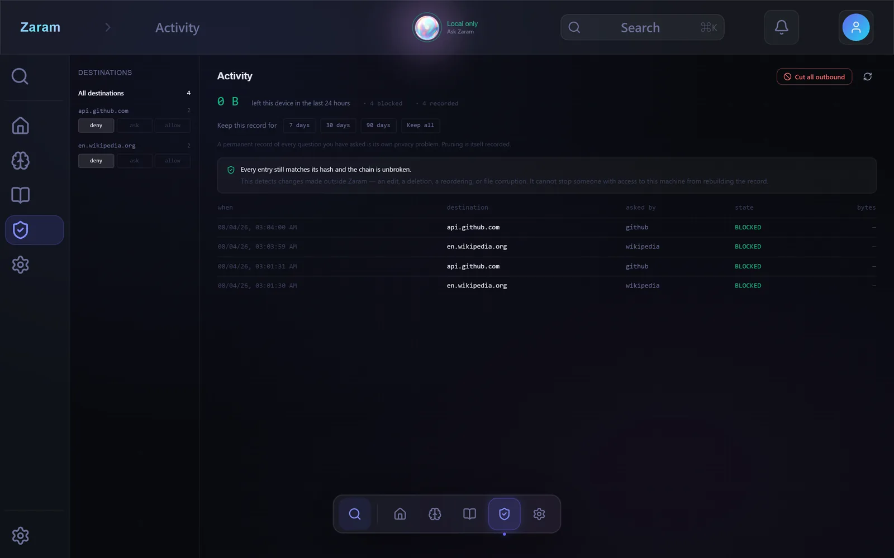

Alpha · Windows
Every AI you use, in one place —
that remembers you, and tells you
the truth about each one.
A model on your own machine answers first — free, private, and no bill per question. Add your own keys when you want more reach, and Zaram picks whichever suits the job. What changes is the model; what doesn't is the memory — it stays on your machine, and every one of them can read it.
Join the alpha
The first builds go out in early September. Two questions, because whether Zaram is any good on your machine depends on the answers.
What you're signing up for
- Windows 10 or 11. There is no macOS or Linux build yet.
- It will break. That is the point of an alpha, and finding out how is the job.
- It isn't code-signed yet, so Windows will warn you the first time. Here's what that means.
- Don't put anything irreplaceable in it. Data may not survive between alpha builds. That changes before beta — see below.
- I'll ask what went wrong. You can ignore me — nobody is on a hook.
Your answers go to the form host named in the footer, and nowhere else. No account, no password, and I'll email you about this and nothing else.
Windows will show a warning the first time. Here's why, and what to click.
Local only — nothing is sent out
Remember: the launch is 9 September in Lagos.
Noted — I'll remember that.
When is the launch?
9 September, in Lagos. M1
M1 Memory · you told me this
It remembers, and it shows you why. Wrong? Correct it once.
One memory, every model
The memory is Zaram's, not the model's. Ask a local model today and a frontier model next week — what it knows about your work doesn't reset because you changed which thing answers.
The truth about each one
Every provider has a different deal with your words, and the free tiers train on them. Zaram names the deal before you pick a model, and again every time something goes.
You decide what leaves
Cloud models are welcome here — it's your key and your call. Nothing goes to a destination you haven't named, you say yes once per destination and kind of data, and every byte that went is in the log.
The whole idea
Use each one for what it's best at.
No model is best at everything, and which one leads changes by the month. Zaram's answer to that isn't to pick a winner — it's to make switching cost you nothing. Run what's on your machine through Ollama or LM Studio, reach further through OpenRouter or any provider whose key you already hold, and let the one that's genuinely better at a job do that job.
Local goes first. On Auto, models on your machine are ranked ahead of anything remote and a cloud model is reached for only when nothing local qualifies. Set Prefer local and Zaram won't reach for one on its own at all.
A model that can't look at a picture isn't a worse answer to a question about a screenshot. It isn't an answer. That's treated as a hard requirement, never a score to be outvoted — while "a coding model would be better at this" stays a preference, so the general model still answers properly when you have no specialist.
The facts, documents and project context live in Zaram's store, not in any model's, so they survive every switch — and each reply names which model answered and where it ran. That's deliberate. A model switch isn't a hole in the story, it is the story. It's also why a drawer full of custom bots never compounds into anything: each one starts over, and this doesn't.
Pictures
Show it a screenshot. It gets read here.
Paste with Ctrl+V, drag one in, or use the paperclip — a receipt, a page of a contract, an error on screen. Pick a vision model running on your machine and it's read where it sits, with nothing uploaded.
Every other assistant has to send that photograph somewhere to answer you. Here it's a choice, and a separate one: a picture is more personal than a sentence, so permission to send a cloud provider your text is not permission to send it your photos — that gets asked once on its own. And if no model you have can read images at all, Zaram says so rather than describing a picture it never saw.
Every model carries its deal
You should know what you're paying with.
Zaram doesn't pretend the cloud is off-limits — it's often the right tool, and it's your key. What it refuses to do is let you use one without knowing the arrangement. Every model in the picker carries one of three labels:
-
Never leaves the device
A model running on your machine. Nothing is sent, and there is nothing to log.
-
Your key, no training
A paid API you brought. The provider's terms exclude training on it. Zaram still logs every byte.
-
Logged, and trained on
Every free tier is this one. Your prompts are kept and become training data. Zaram will use it if you ask — and it will never quietly route you here to save you money.
That last one is the point. Free AI is paid for with your words, and Zaram is the only thing in the chain with no reason to be vague about it — there's no ad model here and nobody's inference to sell.
The egress log
You can see exactly what left, and stop it.
Every destination is listed with its own deny · ask · allow. Requests that were refused are recorded too, so the log tells you what a tool tried to do, not only what it managed. One button cuts all outbound traffic.
The chain is tamper-evident, and the app says plainly what that does and doesn't prove: it detects an edit, deletion or reordering made outside Zaram. It cannot stop someone who already has your machine.
You see the request before it goes and can strike a fact out of it. Measured against a live provider: the preview, the log entry and the bytes actually on the wire were identical at 1,650 bytes, and the struck fact was absent from all three. It isn't a summary of what left — it's what left.

Memory you can correct
Wrong is fixable, and the answers change.
Everything Zaram has learned is listed, searchable, and shows how often it has actually been used. Edit a fact and the original is kept and struck through — answers that relied on it change with it.
There are no thumbs up and no rating buttons. Correcting the fact is the feedback, because it says which part was wrong.
The launch is 9 September in Lagos.
The launch is 14 November in Lagos.
Commitments
Your deadlines are not in a calendar. They're in a PDF.
Payment terms, milestones, deliverables, expiry dates — Zaram reads a contract and pulls out what you owe and when. Each one shows the clause it came from, and each one can be corrected, because an extraction you can't check is worse than none.
It surfaces commitments and drafts the reply. It never silently creates one, and it is not trying to be your calendar — a missed deadline is worse than no reminder, since trust doesn't come back.
Your documents
Point it at a folder. Ask it something you didn't know.
PDFs, Word files, spreadsheets and plain text are read and indexed on the device. Each source carries its own privacy policy, so a folder you never want leaving the machine never does.
Click the citation and the page it came from opens. When Zaram can't work out what you're referring to, it says so and asks — it doesn't fill the gap with something plausible.
Scope
One memory. Not one big pile.
Two different questions, kept apart on purpose. A project says whose work a fact belongs to — decisions, constraints, what a client asked for. A domain says which library to read from — a named set of your sources, like Contracts or Research, that you can ask a question inside.
Domains are many-to-many and never a tree, because a contract belongs in Clients and Legal and making you file it once is how filing systems start losing things. Delete a domain and its sources and their facts stay exactly where they were.
Narrowing what gets read is not the same as splitting what gets kept. The Spine stays one store — which is exactly what a drawer full of separate custom bots can never do, and why nothing you teach them ever adds up.
Who it's for
Anyone who types on a computer — and a few people who don't have an alternative.
Work that can't be uploaded
Therapists, accountants, lawyers, HR. Told to use AI and forbidden to upload it. A model on your own machine is the only version you're permitted, and the log is what makes that checkable rather than promised.
Expensive or patchy internet
Metered data, dropped connections, subscriptions priced in dollars against a local wage. A model already on the machine costs nothing per question and works with the connection down.
Long projects
A thesis, a manuscript, a codebase, a client you've had three years. The value compounds instead of resetting every conversation.
Freelancers and one-person businesses
Rates, terms and deadlines buried in contracts nobody re-reads. Zaram pulls the dates out with the clause attached — and never invents a commitment you didn't make.
Also in the build
Attach anything
Drop, paste or pick a file. The reply tells you how much of it was actually read, rather than pretending it read all of it.
Conversations continue
Past conversations sit on a lip at the edge of the screen. Resume one and the whole transcript comes back, with the model that answered.
It can speak, and listen
Replies are spoken as they're written, not after. Dictation is transcribed on the device. Both are optional installs.
A face, if you want one
The orb by default. Switch to an avatar if you prefer, including your own VRM — it reports what the system is doing, never who answered.
Documents out
Generate .docx and .pdf from your own data, with the sources carried into the file rather than left behind in the chat.
Not only Ollama
LM Studio, TabbyAPI and any OpenAI-compatible local server. The picker tells you where each model actually runs.
What this is, honestly.
It is
- An early alpha, on Windows only. No macOS or Linux build exists yet.
- Source-available — you can read every line on GitHub. That is not the same as open source; see the licence.
- Free to use, with no account, no sign-in and no cap.
- Best with Ollama and one local model pulled. It also works with a cloud key alone.
It is not
- Finished. Expect rough edges, and expect to lose data between alpha builds.
- Able to make pictures. It reads them; it does not draw them.
- A calendar, an accounting system, or a system of record.
- A source of medical, legal or financial advice — it is built to refuse rather than guess.
- Free of cost to run: a local model needs a GPU with headroom, or patience.
What's missing is the front door, not the capability. The parts above have been watched working; getting them running still takes more patience than it should, and that's what the alpha is for. Some pieces are optional downloads with the size stated before you commit — speech about 905 MB, the microphone about 81 MB, and OCR for scanned PDFs about 321 MB. Naming a fix without naming its cost isn't a choice you can make on a metered connection.
Calling this a beta would be the first untrue thing on the page. Beta promises stability, and the top line is genuinely unproven: the installer has never been run on a machine that has never seen the source. Everything above is what alpha testers are actually contributing to.
About the security warning
This build is not code-signed yet. Windows SmartScreen will show "Windows protected your PC", and you'll need to click More info → Run anyway to install it.
We'd rather explain that than hope you don't notice. A signing certificate identifies the publisher; it is paperwork and money, and it is on the list. Until then, the honest position is: verify the file yourself.
SHA-256 of the installer
Check it in PowerShell before you run it:
Get-FileHash .\Zaram-0.1.0-x64.exe -Algorithm SHA256The checksum will be published here alongside the first build, generated by the release pipeline rather than typed by hand.
Told when the next build lands.
One email per release. Nothing else.